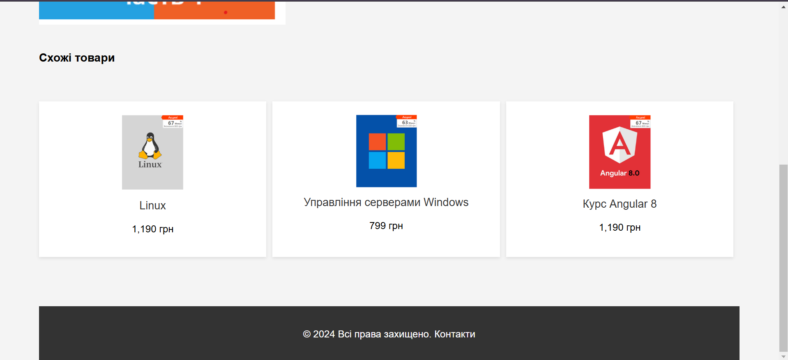

Опис предметного середовища
Бізнес логіка:
Тема: Створення веб-сайту для освітнього проєкту "Programming Academy"
Мета проєкту: Забезпечити зручний і сучасний спосіб для користувачів взаємодіяти з платформою для онлайн-навчання програмуванню. Це включає доступ до курсів, реєстрацію, участь у навчальних програмах, отримання сертифікатів, а також можливість подання заявок на викладання.
Сценарій використання сайту для студентів:
- Клієнт (студент) обирає курс з доступних програм.
- Клієнт реєструється на курс, заповнює особисту інформацію та вибирає метод оплати.
- Клієнт переглядає доступні уроки та приступає до навчання.
- Клієнт проходить тести та отримує сертифікат по завершенню курсу.
- Клієнт взаємодіє з іншими студентами та викладачами через форум чи чат.
Сценарій використання сайту для адміністрації:
- Управління курсами: Додавати, редагувати та видаляти курси, що пропонуються на платформі, включаючи опис, план уроків, матеріали та ціни.
- Керування студентами: Переглядати список зареєстрованих студентів, перевіряти їх успішність, надавати доступ до матеріалів та сертифікатів.
- Управління викладачами: Додавати, редагувати та видаляти інформацію про викладачів, їхні курси та доступність.
- Управління оплатами: Перевіряти статуси оплат за курси, надавати знижки або спеціальні пропозиції для студентів.
- Аналітика та звіти: Переглядати статистику студентів, курсів, тестів та сертифікатів для вдосконалення навчального процесу та бізнес-стратегії.
Тема:СТРУКТУРА HTML-ДОКУМЕНТА. ВИБІР ПРЕДМЕТНОЇ ГАЛУЗІ.
РОБОТА З ПОСИЛАННЯМИ, ТАБЛИЦЯМИ, ЗОБРАЖЕННЯМИ, СПИСКАМИ в HTML-ДОКУМЕНТІ.
Мета:придбати практичні навички роботи з HTML-документом, таблицями, ,
зображеннями, посиланнями, списками, формами
Створити шаблон звітного HTML-документом для відображення результатів роботи всіх лабораторних
робіт.
СТРУКТУРА ДОКУМЕНТА
<!DOCTYPE html>
<html lang="en">
<head>
<meta charset="UTF-8">
<meta name="viewport" content="width=device-width, initial-scale=1.0">
<title>Programming Academy</title>
<link rel="stylesheet" href="styles.css">
<link rel="preconnect" href="https://fonts.googleapis.com">
<link href="https://fonts.googleapis.com/css2?family=Roboto:wght@400;500;700&display=swap" rel="stylesheet">
</head>
<body>
<header class="header">
<div class="container">
<h1 class="logo">Programming Academy</h1>
<nav class="nav">
<a href="#courses">Courses</a>
<a href="#about">About Us</a>
<a href="#signup">Sign Up</a>
</nav>
<button class="menu-toggle" aria-label="Toggle Menu">☰</button>
</div>
</header>
<section id="hero" class="hero">
<div class="container">
<h2>Master Programming Skills!</h2>
<p>Interactive lessons, real-world projects, and certifications to kickstart your programming career.</p>
<a href="#courses" class="btn">Start Learning</a>
</div>
</section>
<section id="courses" class="courses">
<div class="container">
<h2>Popular Courses</h2>
<div class="course-list">
<div class="course">
<h3>HTML & CSS Basics</h3>
<p>Learn how to structure and style web pages effectively.</p>
<a href="#" class="btn btn-secondary">Learn More</a>
</div>
<div class="course">
<h3>JavaScript Essentials</h3>
<p>Make your websites dynamic and interactive with JavaScript.</p>
<a href="#" class="btn btn-secondary">Learn More</a>
</div>
<div class="course">
<h3>Python for Beginners</h3>
<p>Dive into Python programming and start building your own tools.</p>
<a href="#" class="btn btn-secondary">Learn More</a>
</div>
</div>
</div>
</section>
<section id="about" class="about">
<div class="container">
<h2>About Us</h2>
<p>
At Programming Academy, we believe everyone can learn programming. Our mission is to make high-quality coding education accessible to all, with interactive tools and expert support.
</p>
</div>
</section>
<section id="signup" class="signup">
<div class="container">
<h2>Join a Course</h2>
<form>
<label for="name">Name</label>
<input type="text" id="name" name="name" placeholder="Your full name" required>
<label for="email">Email</label>
<input type="email" id="email" name="email" placeholder="Your email address" required>
<label for="course">Select a Course</label>
<select id="course" name="course">
<option value="html-css">HTML & CSS Basics</option>
<option value="javascript">JavaScript Essentials</option>
<option value="python">Python for Beginners</option>
</select>
<button type="submit" class="btn">Sign Up</button>
</form>
</div>
</section>
<footer class="footer">
<div class="container">
<p>© 2024 Programming Academy. All rights reserved.</p>
<p><a href="#hero">Back to Top</a></p>
</div>
</footer>
<script>
const menuToggle = document.querySelector('.menu-toggle');
const nav = document.querySelector('.nav');
menuToggle.addEventListener('click', () => {
nav.classList.toggle('active');
});
</script>
</body>
</html>
HTML таблиці використовуються для представлення даних у форматі рядків і стовпців, що робить їх
зручними для відображення структурованої інформації, такої як таблиці з даними, статистикою чи звітами. Веб-сайти для програмування часто використовують таблиці для відображення результатів, навчальних планів або графіків.
Основні елементи таблиць:
<table>: оголошує саму таблицю.<tr> (table row): визначає рядок таблиці.<th> (table header): визначає заголовок стовпця (зазвичай текст відображається жирним шрифтом та по центру).<td> (table data): визначає клітинку з даними в рядку таблиці.
Приклад:
<table>
<tr>
<th>Назва курсу</th>
<th>Ціна</th>
</tr>
<tr>
<td>Основи HTML</td>
<td>500 грн</td>
</tr>
</table>
HTML дозволяє створювати списки для структурування контенту. Існує два основних типи списків: нумеровані (упорядковані) та ненумеровані (неупорядковані). Списки є важливим елементом на освітньому сайті для зручного відображення програм, модулів, ресурсів.
Основні елементи списків:
<ul>: ненумерований список (unordered list).<ol>: нумерований список (ordered list).<li>: пункт списку (list item).
Приклад ненумерованого списку:
<ul>
<li>Курс 1</li>
<li>Курс 2</li>
</ul>
Приклад нумерованого списку:
<ol>
<li>Перше заняття</li>
<li>Друге заняття</li>
</ol>
HTML-код зображень використовується для вставлення графіки в веб-сторінку. Зображення можуть бути статичними або анімованими, і вони зазвичай використовуються для ілюстрації контенту, прикраси або надання додаткової інформації. На освітніх сайтах зображення можуть служити як допоміжний матеріал для кращого сприйняття уроків.
Основні елементи зображень:
<img>: використовується для вставлення зображення. Основні атрибути:
src: вказує URL-адресу зображення.alt: альтернативний текст, який відображається, якщо зображення не може бути завантажено, або використовується для доступності.
Приклад:
<img src="path/to/image.jpg" alt="Опис зображення" width="300" height="200">
Висновки
Створення веб-сайту для онлайн-навчання програмуванню є важливим кроком у наданні доступу до ресурсів для студентів та викладачів. Це дозволяє студентам зручно переглядати курси, взаємодіяти з іншими учасниками та викладачами, а також отримувати сертифікати по завершенню курсу. Веб-сайт є важливим інструментом для залучення нових студентів і демонстрації професіоналізму навчального проєкту.
Тема:КАСКАДНІ ТАБЛИЦІ СТИЛІВ. СЕЛЕКТОРИ .ІДЕНТИФІКАТОРИ. СТИЛЬОВЕ ОФОРМЛЕННЯ
ТЕКСТОВИХ ЕЛЕМЕНТІВ В HTML-ДОКУМЕНТАХ.
Мета:придбати практичні навички роботи з селекторами: тегів, класів,
ідентифікаторів; списками, різноманітними властивостями
кольору і фону, оформленням текстових елементів/
Способи підключення стилів
1. Вбудовані стилі (Inline Styles)
Стилі додаються безпосередньо до HTML-елемента через атрибут style. Це зручно для одноразового
форматування елементів, але не рекомендується для великих проєктів, оскільки складно підтримувати та масштабувати.
<h1 style="color: blue; font-size: 24px;">Текст із вбудованим стилем</h1>
2. Внутрішні стилі (Internal Styles)
Внутрішні стилі додаються в документ за допомогою блоку <style> у секції
<head>. Це зручно для форматування сторінки, яка не має зовнішнього файлу стилів, і може бути використано для швидкого стилізування невеликих веб-сторінок.
<head>
<style>
h1 {
color: red;
font-size: 24px;
}
</style>
</head>
<body>
<h1>Текст із внутрішнім стилем</h1>
</body>
3. Зовнішні стилі (External Styles)
Зовнішні стилі підключаються через окремий CSS-файл за допомогою тега <link> у
секції <head>. Це найпоширеніший спосіб, який дозволяє розділити HTML і CSS-код,
покращуючи структуру та зручність підтримки. Це особливо корисно для великих проєктів, де потрібно підтримувати багато стилів для різних сторінок.
<head>
<link rel="stylesheet" href="styles.css">
</head>
<body>
<h1>Текст із зовнішнім стилем</h1>
</body>
4. Підключення за допомогою @import
Правило @import дозволяє підключати один або більше зовнішніх CSS-файлів у головному
CSS-файлі. Це менш популярний метод, оскільки він має певні обмеження, такі як затримки в завантаженні сторінки через додаткові запити, а також меншу ефективність порівняно з <link>.
/* Вміст файлу main.css */
@import url("styles.css");
h1 {
color: green;
}
Селектори
Цей блок демонструє використання CSS-селекторів для вибору елементів веб-сторінки.
Селектор за тегом
Вибирає всі елементи, що мають певний тег. Наприклад, p вибирає всі абзаци.
<p>Текст абзацу</p>
Селектор за класом
Вибирає всі елементи з певним класом. Наприклад, .example вибирає всі елементи з
класом
"example".
<div class="example">Текст</div>
Селектор за ідентифікатором
Вибирає елемент за його унікальним ідентифікатором. Наприклад, #unique вибирає
елемент з id
"unique".
<div id="unique">Унікальний елемент</div>
Селектор за атрибутом
Вибирає елементи, що мають певний атрибут або його значення. Наприклад,
[type="text"] вибирає
всі елементи з атрибутом type="text".
<input type="text">
Комбінація селекторів
Ви можете комбінувати селектори для більш точного вибору елементів, наприклад,
div.example p
вибирає всі абзаци всередині елементів з класом "example".
<div class="example"><p>Текст</p></div>
Селектор тегу
У цьому прикладі ми використовуємо селектор тегу <h1>, щоб застосувати стилі
до заголовка.
HTML-код:
<header>
<div class="logo">
<h1>Освітній сайт для програмування</h1>
</div>
</header>
CSS-код:
/* Стиль для тегу h1 */
h1 {
font-family: 'Arial', sans-serif;
font-size: 2.5em;
color: #394C60;
text-align: center;
margin: 0;
padding: 20px;
background-color: #EFECE7;
border-radius: 8px;
}
Результат у браузері:
Цей CSS-код змінить вигляд тексту "Освітній сайт для програмування" у заголовку, задавши йому більший розмір шрифту,
центроване вирівнювання, колір фону, і закруглені краї.
Селектор класу
У цьому прикладі ми використовуємо селектор класу .course-item, щоб стилізувати блоки курсів на вашому освітньому сайті.
HTML-код:
<div class="courses">
<h3>Наші курси</h3>
<div class="course-grid">
<a href="#" class="course-item">
<p>Курс з веб-розробки</p>
<img src="web-development.jpg" alt="Веб-розробка">
</a>
<a href="#" class="course-item">
<p>Курс з графічного дизайну</p>
<img src="graphic-design.jpg" alt="Графічний дизайн">
</a>
<a href="#" class="course-item">
<p>Курс з програмування</p>
<img src="programming.jpg" alt="Програмування">
</a>
<a href="#" class="course-item">
<p>Курс з цифрового маркетингу</p>
<img src="digital-marketing.jpg" alt="Цифровий маркетинг">
</a>
</div>
</div>
CSS-код:
/* Стиль для елементів з класом course-item */
.course-item {
display: block;
text-align: center;
background-color: #EFECE7;
padding: 15px;
margin: 10px;
border-radius: 8px;
transition: transform 0.3s, box-shadow 0.3s;
color: #394C60;
text-decoration: none;
}
.course-item:hover {
transform: translateY(-5px);
box-shadow: 0 6px 10px rgba(0, 0, 0, 0.15);
}
У цьому прикладі ми використовуємо селектор ідентифікатора #course-registration-form, щоб стилізувати форму реєстрації на курс у вашому освітньому веб-застосунку.
HTML код
<div class="registration-form" id="course-registration-form">
<h3>Реєстрація на курс</h3>
<form action="#" method="post">
<label for="name">Ім'я:</label>
<input type="text" id="name" name="name" required>
<label for="email">Email:</label>
<input type="email" id="email" name="email" required>
<label for="course">Оберіть курс:</label>
<select id="course" name="course" required>
<option value="">Оберіть курс</option>
<option value="web-development">Веб-розробка</option>
<option value="graphic-design">Графічний дизайн</option>
<option value="programming">Програмування</option>
<option value="digital-marketing">Цифровий маркетинг</option>
</select>
<label for="date">Дата початку курсу:</label>
<input type="date" id="date" name="date" required>
<label for="message">Додаткові побажання:</label>
<textarea id="message" name="message" rows="4"></textarea>
<button type="submit">Зареєструватися</button>
</form>
</div>
CSS код
#course-registration-form {
background-color: #f4f4f4;
padding: 20px;
border-radius: 8px;
box-shadow: 0 4px 8px rgba(0, 0, 0, 0.1);
margin: 20px 0;
}
#course-registration-form h3 {
color: #2c3e50;
font-family: 'Arial', sans-serif;
}
#course-registration-form form {
display: grid;
gap: 15px;
}
#course-registration-form input,
#course-registration-form select,
#course-registration-form textarea {
width: 100%;
padding: 10px;
border: 1px solid #ccc;
border-radius: 4px;
}
#course-registration-form button {
background-color: #3498db;
color: white;
border: none;
padding: 10px 20px;
border-radius: 4px;
cursor: pointer;
}
#course-registration-form button:hover {
background-color: #2980b9;
}
Інші селектори
У цьому прикладі ми застосовуємо різні типи CSS-селекторів, такі як сусідні, дочірні селектори, селектор атрибута та універсальний селектор для оформлення елементів вашого освітнього сайту.
1. Сусідні селектори
Сусідні селектори дозволяють вибирати елементи, які йдуть безпосередньо після іншого елемента.
.service-item + .service-item {
margin-left: 20px;
}
У цьому прикладі кожен елемент з класом .course-item отримає лівий відступ, якщо перед ним є інший елемент з таким самим класом.
2. Дочірні селектори
Дочірні селектори дозволяють вибирати елементи, які є прямими нащадками іншого елемента.
.course-list > .course-item {
border: 1px solid #ccc;
padding: 10px;
}
У цьому прикладі всі елементи з класом .course-item, які є прямими нащадками елемента з класом .course-list, отримають обведення та відступи.
3. Селектор атрибута
Селектор атрибута дозволяє вибирати елементи за значенням їх атрибута.
input[type="email"] {
border-color: #3498db;
}
У цьому прикладі ми використовуємо селектор атрибута для вибору всіх елементів <input> з атрибутом type="email" і встановлюємо для них синій колір рамки.
4. Універсальний селектор
Універсальний селектор вибирає всі елементи на сторінці.
* {
box-sizing: border-box;
margin: 0;
padding: 0;
}
Цей універсальний селектор скидає відступи і додає box-sizing: border-box; до всіх елементів на сторінці, що допомагає в керуванні розмірами елементів на вашому сайті.
Кроки підключення шрифта через Google Fonts
Щоб підключити шрифт до веб-сайту через Google Fonts, слід виконати наступні кроки:
-
Перейдіть на сайт Google Fonts і виберіть бажаний шрифт. Наприклад, ми вибираємо шрифт Roboto.
-
На сторінці шрифта натискаємо кнопку + для додавання шрифта до списку вибраних. Потім натискаємо на панель, що з'явиться внизу, щоб отримати код для підключення.
-
Скопіюйте тег <link>, який надається на сайті, та вставте його у секцію <head> вашого HTML-документу.
<link href="https://fonts.googleapis.com/css2?family=Roboto:wght@400;700&display=swap" rel="stylesheet">
-
Використовуйте підключений шрифт у CSS-стилях вашого веб-сайту. Наприклад:
body {
font-family: 'Roboto', sans-serif;
}
-
Тепер шрифт Roboto застосовується до всіх текстових елементів, що використовують цей стиль на вашому сайті.
CSS: Шрифти Текст Таблиці Фон Контур Списки CSS Просунутий
У цьому розділі ми демонструємо різні техніки стилізації тексту, таблиць, списків та фонів за
допомогою каскадних
таблиць стилів (CSS).
1. Шрифти
Для стилізації тексту на сайті ми використовуємо шрифт Roboto з Google Fonts, а
також стильове
оформлення для заголовків і абзаців.
<link href="https://fonts.googleapis.com/css2?family=Roboto:wght@400;700&display=swap" rel="stylesheet">
body {
font-family: 'Roboto', sans-serif;
}
h1, h2, h3 {
font-family: 'Roboto', sans-serif;
font-weight: bold;
}
2. Контури
Контури додаються до елементів за допомогою властивості text-shadow для тексту і
box-shadow для контейнерів.
h1 {
text-shadow: 2px 2px 5px rgba(0, 0, 0, 0.3);
}
.content-section {
box-shadow: 0 4px 10px rgba(0, 0, 0, 0.1);
}
3. Фон
Фон для елементів може бути однотонним або градієнтним. Ось приклад градієнтного фону для секцій:
.content-section {
background: linear-gradient(135deg, #f6d365, #fda085);
padding: 20px;
border-radius: 8px;
}
4. Колір тексту
Для зміни кольору тексту використовуються властивості color та
background-color.
Приклад для заголовків:
h1 {
color: #2c3e50;
}
p {
color: #7f8c8d;
}
.highlight {
color: #e74c3c;
}
5. CSS-властивості для таблиць
Таблиці можна стилізувати за допомогою CSS, додаючи контури, відступи та змінюючи кольори фону.
table {
width: 100%;
border-collapse: collapse;
}
th, td {
border: 1px solid #ccc;
padding: 10px;
text-align: left;
}
th {
background-color: #3498db;
color: white;
}
td {
background-color: #ecf0f1;
}
6. Багаторівневі списки
Для багаторівневих списків можна застосовувати відступи та зміщення за допомогою властивості
padding
та margin.
ul {
list-style-type: none;
}
li {
margin: 5px 0;
}
li ul {
margin-left: 20px;
}
7. CSS Просунутий
Просунуте використання CSS включає застосування анімацій, псевдокласів та псевдоелементів. Ось
приклад анімації
для кнопки:
.button {
background-color: #3498db;
color: white;
padding: 10px 20px;
border-radius: 4px;
cursor: pointer;
transition: background-color 0.3s ease;
}
.button:hover {
background-color: #2980b9;
}
.button:active {
transform: scale(0.95);
}
Приклад таблиці
| Ім'я |
Прізвище |
Вік |
| Іван |
Петренко |
25 |
| Марія |
Іванова |
30 |
| Олександр |
Сидоренко |
28 |
Приклад багаторівневого списку
- Основний пункт 1
- Підпункт 1.1
- Підпункт 1.2
- Основний пункт 2
- Підпункт 2.1
- Підпункт 2.2
Висновки
У процесі виконання роботи було отримано практичні навички використання каскадних таблиць стилів
(CSS) для
оформлення HTML-документів. Ми розглянули та реалізували такі методи підключення стилів:
- Вбудовані стилі (inline styles) – для одноразового форматування елементів.
- Внутрішні стилі (internal styles) – для роботи з окремими сторінками.
- Зовнішні стилі (external styles) – для організації та підтримки великих проєктів.
- Метод
@import – для підключення додаткових файлів стилів.
Вивчено принципи використання селекторів: тегів, класів, ідентифікаторів, атрибутів, дочірніх та
сусідніх
елементів.
Також застосовано різноманітні властивості CSS для стилізації текстових елементів, списків, фону
та
інтерактивних ефектів.
Висновок: використання CSS дозволяє створювати привабливі, функціональні та зручні для
користувачів
веб-сторінки.
Контрольні питання
1. Для чого використовуються каскадні таблиці стилів?
Каскадні таблиці стилів (CSS) використовуються для опису зовнішнього вигляду елементів
веб-сторінки, таких як шрифти,
кольори, відступи, розміри тощо. Вони дозволяють розділити структуру документа (HTML) і його
стилі (CSS),
забезпечуючи гнучкість і зручність у дизайні.
2. Які методи визначення стилів у HTML-документі ви знаєте?
- Вбудований стиль (inline styles): за допомогою атрибуту
style у тегах HTML.
- Внутрішній стиль (internal styles): у межах тегів
<style> у розділі
<head>.
- Зовнішній стиль (external styles): у зовнішньому CSS-файлі, підключеному через тег
<link>.
3. У чому різниця між принципами каскадування і спадкування?
Каскадування: Це процес вирішення конфліктів між стилями, що застосовуються до
одного і того ж
елемента з різних джерел. Враховується специфічність, порядок визначення і важливість
(important).
Спадкування: Це властивість деяких CSS-властивостей (наприклад, колір тексту
або шрифт) автоматично
передаватися дочірнім елементам.
4. Як в HTML-документі оформлюються селектори тегу і класу?
Селектор тегу: Оформлюється через назву тега, наприклад:
p {
color: blue;
}
Селектор класу: Починається з крапки і застосовується до елементів з відповідним
атрибутом
class:
.highlight {
background-color: yellow;
}
5. Для чого використовується ідентифікатор?
Ідентифікатор використовується для стилізації або маніпуляцій із певним унікальним елементом
HTML-сторінки. Він
задається через атрибут id і викликається в CSS за допомогою символу
#.
6. Навести приклади оформлення текстових елементів
Приклади стилізації тексту:
h1 {
font-size: 24px;
color: #2c3e50;
text-align: center;
}
p {
line-height: 1.6;
font-family: 'Arial', sans-serif;
color: #7f8c8d;
}
.highlight {
font-weight: bold;
color: #e74c3c;
background-color: #fef9e7;
}
Тема:ВЕРСТКА HTML-ДОКУМЕНТУ. БЛОКОВА ВЕРСТКА. ВЕРСТКА ЗАСОБАМИ CSS та FLEXBOX.
Мета:⎯ придбати практичні навички роботи верстки сторінок засобами CSS,
верстки на основі
плаваючих елементів, з’ясувати
переваги та недоліки типів макетів веб-сторінок
⎯ придбати практичні навички роботи верстки сторінок засобами CSS та FLEXBOX
Опис особливостей макету
1. Блокова гумова верстка
Макет побудований за принципом блокової верстки, де основні елементи, такі як
header,
section,
footer, розташовані у вигляді окремих блоків. Кожен блок займає певну частину
сторінки, але їх
розміри
змінюються відповідно до ширини екрану, що є ознакою гумової верстки. Це досягається
використанням відносних
одиниць,
таких як %, vh, vw.
/* Приклад гумової верстки */
.container {
width: 90%; /* Ширина контейнера змінюється відповідно до ширини вікна */
margin: 0 auto;
max-width: 1200px; /* Максимальна ширина для великих екранів */
}
2. Використання Flexbox
У макеті активно використовується Flexbox для вирівнювання елементів. Наприклад, у шапці сайту
логотип і меню
навігації
вирівнюються за допомогою властивостей display: flex і
justify-content.
/* Шапка сайту */
header {
display: flex;
justify-content: space-between; /* Логотип зліва, меню справа */
align-items: center; /* Вирівнювання по вертикалі */
padding: 20px;
background-color: #f5f5f5;
}
/* Секція карток */
.card-container {
display: flex;
flex-wrap: wrap; /* Елементи переходять на новий рядок при недостатній ширині */
gap: 20px; /* Відстань між картками */
}
.card {
flex: 1 1 calc(33.333% - 20px); /* Три картки в ряд */
max-width: 300px; /* Обмеження максимальної ширини */
background-color: #fff;
border: 1px solid #ddd;
padding: 15px;
}
3. Адаптивна верстка
Хоча макет побудований за принципом гумової верстки, його можна легко адаптувати для різних
розмірів екранів за
допомогою
медіазапитів. Наприклад, у наведеному коді картки автоматично змінюють свій розмір, але можна
додати медіазапити
для
кращої адаптації.
@media (max-width: 768px) {
.card {
flex: 1 1 100%; /* Картки займають всю ширину екрана на малих пристроях */
}
}
Висновок
Макет є блоковим, оскільки використовує розділення на основні секції, гумовим — завдяки
відносним одиницям,
і адаптивним, оскільки підтримує зміну вигляду елементів залежно від ширини екрана. Flexbox
забезпечує зручність
у
вирівнюванні та створенні гнучкої структури макету.
Завдання 2. Варіант 9. В даному завданні необхідно створити кілька веб-сторінок з різними верстками. Ось що потрібно реалізувати:
- Створити табличну верстку (використовувати останню цифру варіанту для номера таблиці):
- Фіксована таблична верстка
- Гумова таблична верстка
- Створити блокову верстку (використовувати наступну цифру після останньої цифри варіанту):
- Фіксована блокова верстка
- Гумова блокова верстка
1.1 Фіксована таблична верстка
<!DOCTYPE html>
<html lang="uk">
<head>
<meta charset="UTF-8">
<meta name="viewport" content="width=device-width, initial-scale=1.0">
<title>Фіксована таблична верстка</title>
<style>
table {
width: 800px; /* Фіксована ширина */
margin: 0 auto;
border-collapse: collapse;
}
th, td {
border: 1px solid #ddd;
padding: 10px;
text-align: center;
}
th {
background-color: #f2f2f2;
}
</style>
</head>
<body>
<h1>Таблиця з фіксованою шириною</h1>
<table>
<tr>
<th>№</th>
<th>Назва</th>
<th>Ціна</th>
</tr>
<tr>
<td>1</td>
<td>Товар A</td>
<td>100 грн</td>
</tr>
<tr>
<td>2</td>
<td>Товар B</td>
<td>200 грн</td>
</tr>
<tr>
<td>3</td>
<td>Товар C</td>
<td>150 грн</td>
</tr>
</table>
</body>
</html>
1.2 Гумова таблична верстка
<!DOCTYPE html>
<html lang="uk">
<head>
<meta charset="UTF-8">
<meta name="viewport" content="width=device-width, initial-scale=1.0">
<title>Гумова таблична верстка</title>
<style>
table {
width: 100%; /* Ширина таблиці автоматично пристосовується до екрану */
border-collapse: collapse;
}
th, td {
border: 1px solid #ddd;
padding: 10px;
text-align: center;
}
th {
background-color: #f2f2f2;
}
</style>
</head>
<body>
<h1>Гумова таблична верстка</h1>
<table>
<tr>
<th>№</th>
<th>Назва</th>
<th>Ціна</th>
</tr>
<tr>
<td>1</td>
<td>Товар A</td>
<td>100 грн</td>
</tr>
<tr>
<td>2</td>
<td>Товар B</td>
<td>200 грн</td>
</tr>
<tr>
<td>3</td>
<td>Товар C</td>
<td>150 грн</td>
</tr>
</table>
</body>
</html>
2.1 Фіксована блокова верстка
<!DOCTYPE html>
<html lang="uk">
<head>
<meta charset="UTF-8">
<meta name="viewport" content="width=device-width, initial-scale=1.0">
<title>Фіксована блокова верстка</title>
<style>
.container {
width: 800px; /* Фіксована ширина */
margin: 0 auto;
display: flex;
justify-content: space-between;
}
.box {
width: 30%;
height: 200px;
background-color: #f2f2f2;
text-align: center;
padding: 20px;
box-sizing: border-box;
}
</style>
</head>
<body>
<h1>Фіксовані блоки</h1>
<div class="container">
<div class="box">Блок 1</div>
<div class="box">Блок 2</div>
<div class="box">Блок 3</div>
</div>
</body>
</html>
2.2 Гумова блокова верстка
<!DOCTYPE html>
<html lang="uk">
<head>
<meta charset="UTF-8">
<meta name="viewport" content="width=device-width, initial-scale=1.0">
<title>Гумова блокова верстка</title>
<style>
.container {
width: 100%; /* Ширина контейнера адаптується до екрану */
display: flex;
justify-content: space-between;
flex-wrap: wrap;
}
.box {
width: 30%;
height: 200px;
background-color: #f2f2f2;
text-align: center;
padding: 20px;
box-sizing: border-box;
margin-bottom: 20px;
}
</style>
</head>
<body>
<h1>Гумові блоки</h1>
<div class="container">
<div class="box">Блок 1</div>
<div class="box">Блок 2</div>
<div class="box">Блок 3</div>
</div>
</body>
</html>
Завдання 3. Варіант 9. 8. Виконати Завдання №3, використовуючи засоби CSS та FLEXBOX

<!DOCTYPE html>
<html lang="uk">
<head>
<meta charset="UTF-8">
<meta name="viewport" content="width=device-width, initial-scale=1.0">
<title>HTML і CSS Професійний курс частина 1</title>
<style>
body {
font-family: Arial, sans-serif;
background-color: #f4f4f4;
margin: 0;
padding: 0;
}
.container {
width: 90%;
margin: 0 auto;
}
header {
display: flex;
justify-content: space-between;
background-color: #ffffff;
padding: 20px;
box-shadow: 0 2px 5px rgba(0, 0, 0, 0.1);
}
header img {
height: 50px;
}
header .promo {
text-align: right;
}
header .promo span {
display: block;
color: #333;
font-size: 14px;
}
header .promo span:first-child {
color: #f16e37;
font-size: 18px;
}
.main-content {
display: flex;
justify-content: space-between;
margin-top: 40px;
flex-wrap: wrap;
}
.main-content img {
max-width: 400px;
width: 100%;
height: auto;
margin-bottom: 20px;
}
.course-info {
flex: 1;
margin-left: 20px;
max-width: 600px;
}
.course-info h2 {
font-size: 26px;
color: #333;
margin-bottom: 10px;
}
.course-info p {
font-size: 16px;
color: #666;
line-height: 1.6;
}
.course-info .price {
font-size: 28px;
color: #f16e37;
font-weight: bold;
}
.course-info .old-price {
font-size: 22px;
text-decoration: line-through;
color: #aaa;
margin-left: 10px;
}
.course-info button {
background-color: #f16e37;
color: white;
font-size: 18px;
padding: 12px 25px;
border: none;
cursor: pointer;
margin-top: 20px;
width: 100%;
border-radius: 5px;
transition: background-color 0.3s ease;
}
.course-info button:hover {
background-color: #e14a2a;
}
.related-products {
display: flex;
justify-content: space-between;
margin-top: 60px;
flex-wrap: wrap;
}
.related-product {
text-align: center;
flex: 1;
padding: 20px;
background-color: #ffffff;
box-shadow: 0 2px 5px rgba(0, 0, 0, 0.1);
margin-right: 10px;
margin-bottom: 20px;
}
.related-product img {
max-width: 100px;
height: auto;
}
.related-product .product-title {
font-size: 18px;
color: #333;
margin-top: 10px;
}
footer {
background-color: #333;
color: white;
text-align: center;
padding: 20px;
margin-top: 60px;
}
footer a {
color: #ffffff;
text-decoration: none;
}
/* Адаптивність */
@media (max-width: 768px) {
.main-content {
flex-direction: column;
align-items: center;
}
.course-info {
margin-left: 0;
}
.related-products {
flex-direction: column;
}
}
</style>
</head>
<body>
<div class="container">
<div class="main-content">
<div>
<img src="html-css-image.png" alt="HTML i CSS курс">
</div>
<div class="course-info">
<h2>HTML і CSS Професійний курс частина 1</h2>
<p>Відео запис курсу HTML і CSS. На цьому курсі ви навчитесь робити справжні проекти, такі як сайти різної складності, як в індустрії.</p>
<div>
<span class="price">390 грн</span>
<span class="old-price">1,190 грн</span>
</div>
<button>Купити</button>
</div>
</div>
<h3>Схожі товари</h3>
<div class="related-products">
<div class="related-product">
<img src="linux.png" alt="Linux">
<p class="product-title">Linux</p>
<p>1,190 грн</p>
</div>
<div class="related-product">
<img src="windows.png" alt="Windows">
<p class="product-title">Управління серверами Windows</p>
<p>799 грн</p>
</div>
<div class="related-product">
<img src="angular.png" alt="Angular">
<p class="product-title">Курс Angular 8</p>
<p>1,190 грн</p>
</div>
</div>
<footer>
<p>© 2024 Всі права захищено. <a href="#">Контакти</a></p>
</footer>
</div>
</body>
</html>
<!DOCTYPE html>
<html lang="uk">
<head>
<meta charset="UTF-8">
<meta name="viewport" content="width=device-width, initial-scale=1.0">
<title>HTML і CSS Професійний курс частина 1</title>
<style>
body {
font-family: Arial, sans-serif;
background-color: #f4f4f4;
margin: 0;
padding: 0;
}
.container {
width: 90%;
margin: 0 auto;
}
header {
display: flex;
justify-content: space-between;
background-color: #ffffff;
padding: 20px;
box-shadow: 0 2px 5px rgba(0, 0, 0, 0.1);
}
header img {
height: 50px;
}
header .promo {
text-align: right;
}
header .promo span {
display: block;
color: #333;
font-size: 14px;
}
header .promo span:first-child {
color: #f16e37;
font-size: 18px;
}
.main-content {
display: flex;
justify-content: space-between;
margin-top: 40px;
flex-wrap: wrap;
}
.main-content img {
max-width: 400px;
width: 100%;
height: auto;
margin-bottom: 20px;
}
.course-info {
flex: 1;
margin-left: 20px;
max-width: 600px;
}
.course-info h2 {
font-size: 26px;
color: #333;
margin-bottom: 10px;
}
.course-info p {
font-size: 16px;
color: #666;
line-height: 1.6;
}
.course-info .price {
font-size: 28px;
color: #f16e37;
font-weight: bold;
}
.course-info .old-price {
font-size: 22px;
text-decoration: line-through;
color: #aaa;
margin-left: 10px;
}
.course-info button {
background-color: #f16e37;
color: white;
font-size: 18px;
padding: 12px 25px;
border: none;
cursor: pointer;
margin-top: 20px;
width: 100%;
border-radius: 5px;
transition: background-color 0.3s ease;
}
.course-info button:hover {
background-color: #e14a2a;
}
.related-products {
display: flex;
justify-content: space-between;
margin-top: 60px;
flex-wrap: wrap;
}
.related-product {
text-align: center;
flex: 1;
padding: 20px;
background-color: #ffffff;
box-shadow: 0 2px 5px rgba(0, 0, 0, 0.1);
margin-right: 10px;
margin-bottom: 20px;
}
.related-product img {
max-width: 100px;
height: auto;
}
.related-product .product-title {
font-size: 18px;
color: #333;
margin-top: 10px;
}
footer {
background-color: #333;
color: white;
text-align: center;
padding: 20px;
margin-top: 60px;
}
footer a {
color: #ffffff;
text-decoration: none;
}
/* Адаптивність */
@media (max-width: 768px) {
.main-content {
flex-direction: column;
align-items: center;
}
.course-info {
margin-left: 0;
}
.related-products {
flex-direction: column;
}
}
</style>
</head>
<body>
<div class="container">
<div class="main-content">
<div>
<img src="html-css-image.png" alt="HTML i CSS курс">
</div>
<div class="course-info">
<h2>HTML і CSS Професійний курс частина 1</h2>
<p>Відео запис курсу HTML і CSS. На цьому курсі ви навчитесь робити справжні проекти, такі як сайти різної складності, як в індустрії.</p>
<div>
<span class="price">390 грн</span>
<span class="old-price">1,190 грн</span>
</div>
<button>Купити</button>
</div>
</div>
<h3>Схожі товари</h3>
<div class="related-products">
<div class="related-product">
<img src="linux.png" alt="Linux">
<p class="product-title">Linux</p>
<p>1,190 грн</p>
</div>
<div class="related-product">
<img src="windows.png" alt="Windows">
<p class="product-title">Управління серверами Windows</p>
<p>799 грн</p>
</div>
<div class="related-product">
<img src="angular.png" alt="Angular">
<p class="product-title">Курс Angular 8</p>
<p>1,190 грн</p>
</div>
</div>
<footer>
<p>© 2024 Всі права захищено. <a href="#">Контакти</a></p>
</footer>
</div>
</body>
</html>
Висновки
Розробка цього сайту з використанням HTML та CSS демонструє основні принципи сучасної веб-розробки, зокрема важливість правильного структурування контенту та ефективного стилювання. Використання семантичної розмітки HTML дозволяє створювати зрозумілу і логічну структуру сторінки, а CSS забезпечує естетичне та адаптивне оформлення сайту.
- Використання Flexbox для адаптивного розташування елементів, що гарантує коректне відображення на різних пристроях, від мобільних телефонів до десктопів.
- Застосування напівпрозорих елементів для додавання глибини в дизайн і покращення візуальної привабливості інтерфейсу.
- Організація коду згідно з принципом DRY (Don't Repeat Yourself) для полегшення підтримки та масштабування проекту.
- Розділення стилів на загальні та специфічні для кожної секції, що підвищує читабельність і зручність повторного використання коду.
- Реалізація зручних елементів навігації, таких як випадаючі меню, для покращення користувацького досвіду.
Цей сайт відповідає сучасним вимогам веб-розробки, зокрема в плані адаптивності, доступності та зручності для користувачів. Він може служити основою для подальшого покращення і розвитку, додаючи нові функціональності і вдосконалюючи дизайн.
Контрольні питання
-
На яких трьох базових концепціях засновані всі методики верстки сторінок засобами CSS?
Методики верстки засновані на таких концепціях:
- Потік документа: природне розташування елементів на сторінці, без впливу зовнішніх стилів.
- Блокова та стрічкова модель: визначає, як елементи займають простір на сторінці в залежності від їх типу та стилів.
- Відносне та абсолютне позиціонування: дозволяє елементам розташовуватись в певному місці відносно інших елементів або конкретних координат.
-
Дати визначення фіксованому типу макетів веб-сторінок. Переваги та недоліки.
Фіксований макет: елементи мають фіксовану ширину, незалежно від розміру екрану.
Переваги: точний контроль за відображенням сайту, простота реалізації.
Недоліки: погана адаптивність для мобільних пристроїв і різних розмірів екрану.
-
Дати визначення гумовому типу макетів веб-сторінок. Переваги та недоліки.
Гумовий макет: ширина елементів визначається у відсотках, що дозволяє змінювати пропорції відповідно до ширини вікна браузера.
Переваги: краща адаптація для різних екранів.
Недоліки: можливі проблеми з читабельністю на дуже великих або малих екранах.
-
Дати визначення еластичному типу макетів веб-сторінок. Переваги та недоліки.
Еластичний макет: ширина елементів задається за допомогою відносних одиниць (наприклад, em або rem).
Переваги: дозволяє легко налаштовувати шрифти та елементи залежно від розміру екрану.
Недоліки: складніше налаштувати пропорції між елементами на сторінці.
-
Дати визначення адаптивному типу макетів веб-сторінок. Переваги та недоліки.
Адаптивний макет: використовує медіазапити для зміни стилів відповідно до різних розмірів екранів.
Переваги: чудово підходить для всіх типів пристроїв.
Недоліки: розробка та тестування можуть бути складнішими через потребу в окремих стилях для різних екранів.
-
Дати визначення комбінованому типу макетів веб-сторінок. Переваги та недоліки.
Комбінований макет: поєднує різні підходи, включаючи фіксовані, гумові та адаптивні принципи.
Переваги: універсальність, можливість гнучко налаштовувати макет для різних умов.
Недоліки: складність реалізації та підтримки.
-
Як засобами HTML та CSS створити веб-сторінку за допомогою таблиці?
Таблиці використовуються для організації даних. Стилізувати таблиці можна за допомогою CSS, проте цей метод є застарілим для верстки макетів.
-
Як засобами HTML та CSS створити веб-сторінку за допомогою плаваючих блоків?
Метод плаваючих блоків використовує властивість float для розташування елементів. Цей підхід поступово замінюється новішими методами, такими як Flexbox і Grid.
Тема:АДАПТИВНА ВЕРСТКА. МЕДІА-ЗАПИТИ. МЕТАТЕГ VIEWPORT.
Мета:Адаптивна верстка. Медіа-запити. Медіа-типи. Медіа-функції.Метатег viewport. Інструменти розробника. Стратегія Mobile
First.
Десктопна версія
Десктопна версія оптимізована для екранів шириною понад 1024px.
Для десктопів використовується широка структура макета із центральним контентом, шрифтами стандартного
розміру та великою кількістю простору між елементами.
/* Адаптація для екранів шириною від 1024px */
/* Додано центральне вирівнювання контенту */
@media (min-width: 1024px) {
body {
max-width: 1200px; /* Обмеження максимальної ширини */
margin: 0 auto; /* Центрування контенту */
font-size: 16px; /* Стандартний розмір шрифту */
}
.sidebar {
width: 250px; /* Ширина бокового меню */
}
}
Планшетна версія
Планшетна версія оптимізована для ширини екранів від 768px до 1024px.
Основні зміни: зменшення розміру шрифтів, оптимізація відступів, перегрупування елементів для забезпечення
кращої читабельності.
/* Адаптація для планшетів */
/* Оптимізація відступів і структури макету */
@media (max-width: 1024px) and (min-width: 768px) {
body {
padding: 10px; /* Внутрішні відступи */
}
.sidebar {
width: 200px; /* Менша ширина сайдбару */
}
.content-section {
margin: 0 10px; /* Відступи для контенту */
}
}
Мобільна версія
Мобільна версія розроблена для ширини екранів менше 768px.
Основні зміни: вертикальне розташування елементів, максимальна адаптація навігації, приховування неважливих
блоків.
/* Адаптація для мобільних пристроїв */
/* Вертикальне розташування елементів, мінімалістичний дизайн */
@media (max-width: 768px) {
.sidebar {
display: none; /* Приховуємо сайдбар */
}
body {
font-size: 14px; /* Менший розмір шрифту */
padding: 10px; /* Зменшені відступи */
}
header {
text-align: center; /* Центрування заголовку */
}
}
Пояснення підходу
Для адаптивної верстки використані брейкпоінти 768px та 1024px. Для кожного
розміру екрану створено окремі стилі, що забезпечують оптимальний UX. Головні аспекти:
- Великий розмір шрифтів та просторі блоки для десктопів.
- Оптимізація відступів для планшетів.
- Спрощення структури для мобільних пристроїв.
Логічні оператори
У процесі створення верстки використовувались логічні оператори and, not у
медіа-запитах для точного налаштування умов:
/* Використання логічних операторів */
@media not all and (max-width: 600px) {
header {
background-color: #f4f4f4;
}
}
Висновки до лабораторної роботи №4
-
Розробка адаптивної верстки:
У ході лабораторної роботи було створено адаптивну верстку для трьох основних типів пристроїв:
десктопів,
планшетів і мобільних телефонів. Використання медіа-запитів дозволило реалізувати відповідні стилі
для
кожного розміру екрану, забезпечуючи зручність використання сайту незалежно від пристрою.
-
Десктопна версія:
Верстка для десктопних пристроїв була розроблена з урахуванням екранів шириною понад 1024px. Основна
увага
приділялась зручному розташуванню елементів, оптимальній ширині контейнерів і коректному розмірові
шрифтів
для читабельності.
-
Планшетна версія:
Для екранів шириною від 768px до 1024px були застосовані стилі, що оптимізують розташування елементів
у більш
компактному вигляді. Забезпечено зручність навігації завдяки адаптації меню та розташуванню
контенту.
-
Мобільна версія:
Для пристроїв з екранами менш ніж 768px застосовано мінімалістичний дизайн із видаленням зайвих
елементів. Це
забезпечило швидке завантаження сторінки та зручне використання на невеликих екранах.
-
Використання логічних операторів:
У процесі розробки адаптивної верстки було застосовано логічні оператори and,
not
для точного визначення умов медіа-запитів. Це дозволило покращити ефективність адаптації стилів для
різних
пристроїв.
-
Висновок:
Отримані знання та практичні навички з адаптивної верстки дозволять розробляти сучасні веб-сторінки,
що
відповідають потребам різних користувачів. Використання медіа-запитів і логічних операторів
забезпечує
високий рівень гнучкості дизайну.